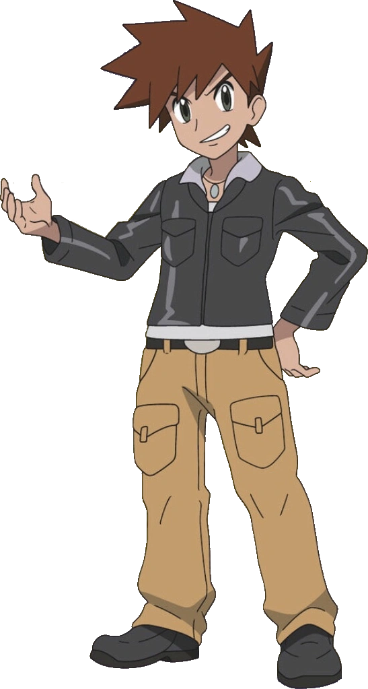

Pokemon
Ten-year-old Ash aspires to be the greatest Pokémon (pocket monster)
trainer in the world. To do this, he enlists the help of many friends,
and his own Pokémon, Pikachu. Together, they must search their world for
new Pokémon, while avoiding the likes of Team Rocket, as well as other
evil organizations, as well as battling rivals, and meeting legendary
Pokémon.
Ash Ketchum

Ash Ketchum, known as Satoshi in Japan, is a fictional character in
the Pokémon franchise owned by Nintendo. He is the protagonist of the
Pokémon anime and certain manga series as well as on various
merchandise related to the franchise. Due to the huge popularity,
success, and longevity of the Pokémon anime series around the world
since its debut, Ash has gone on to become one of the most well-known
and recognizable fictional characters of all-time.
Gary Oak

Ash Ketchum, known as Satoshi in Japan, is a fictional character in
the Pokémon franchise owned by Nintendo. He is the protagonist of the
Pokémon anime and certain manga series as well as on various
merchandise related to the franchise. Due to the huge popularity,
success, and longevity of the Pokémon anime series around the world
since its debut, Ash has gone on to become one of the most well-known
and recognizable fictional characters of all-time.